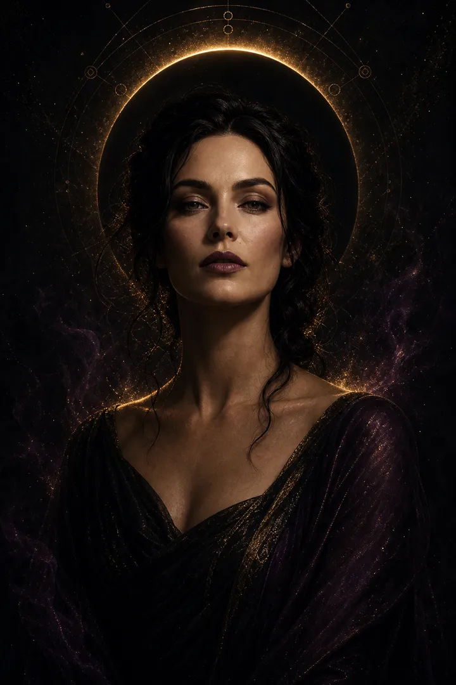
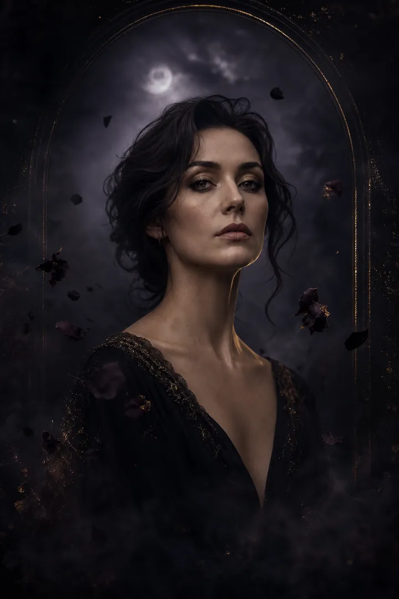
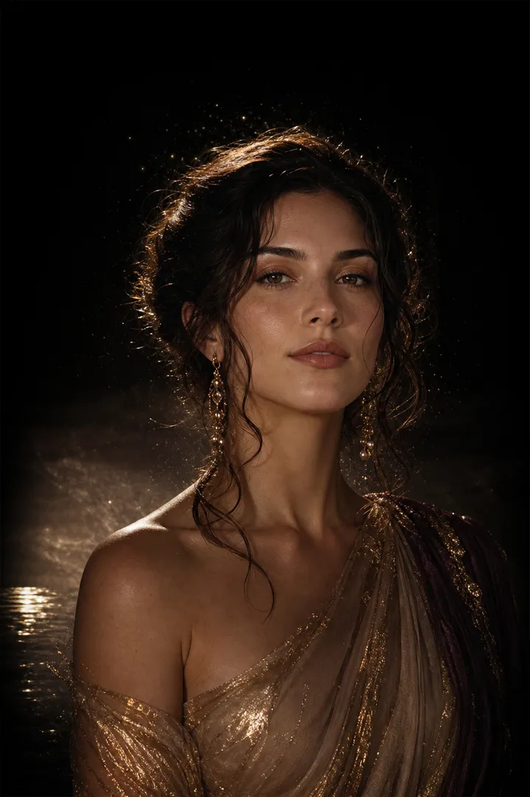
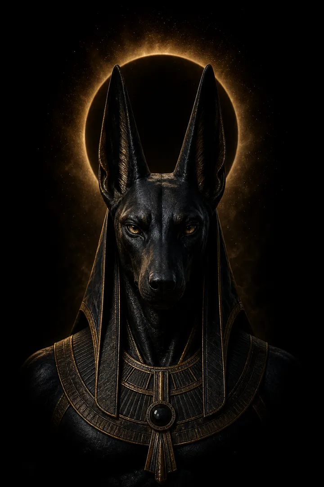
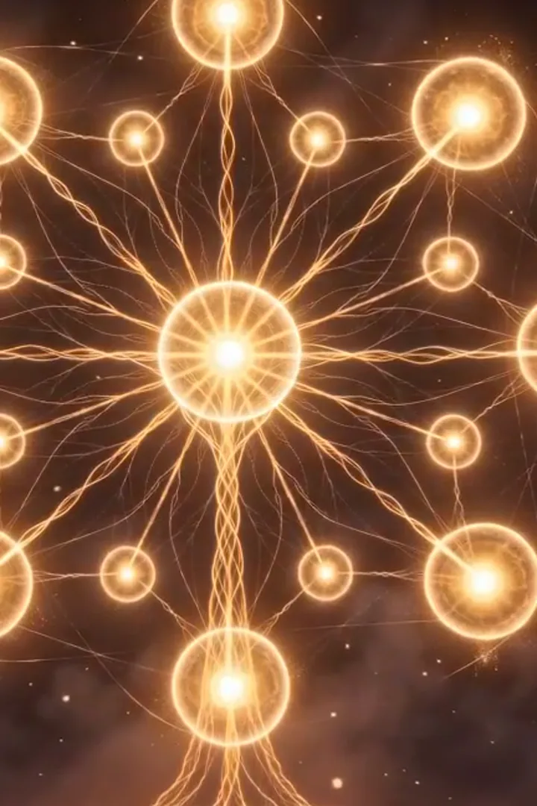
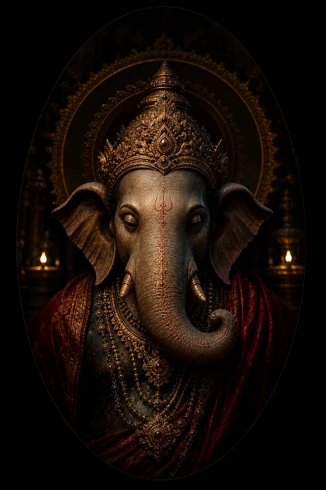
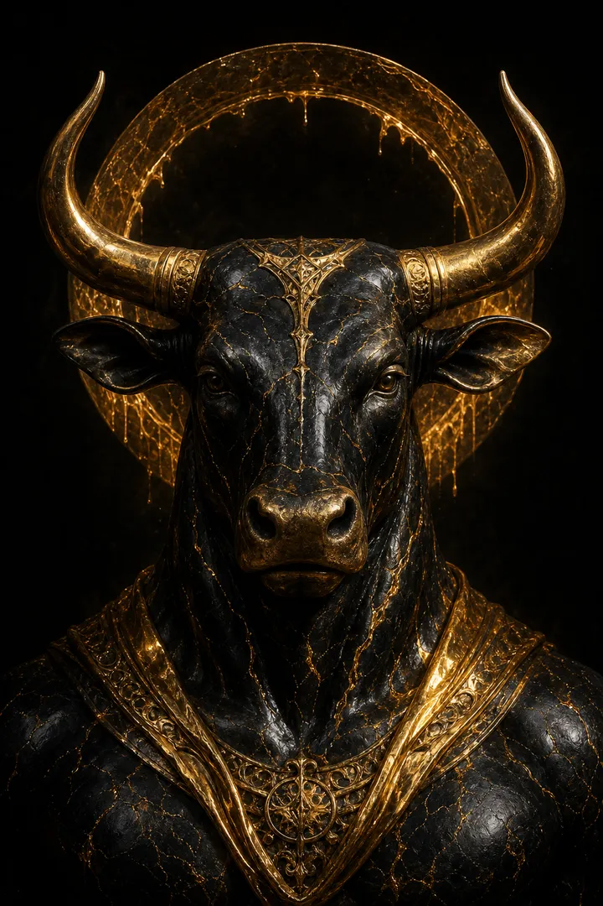
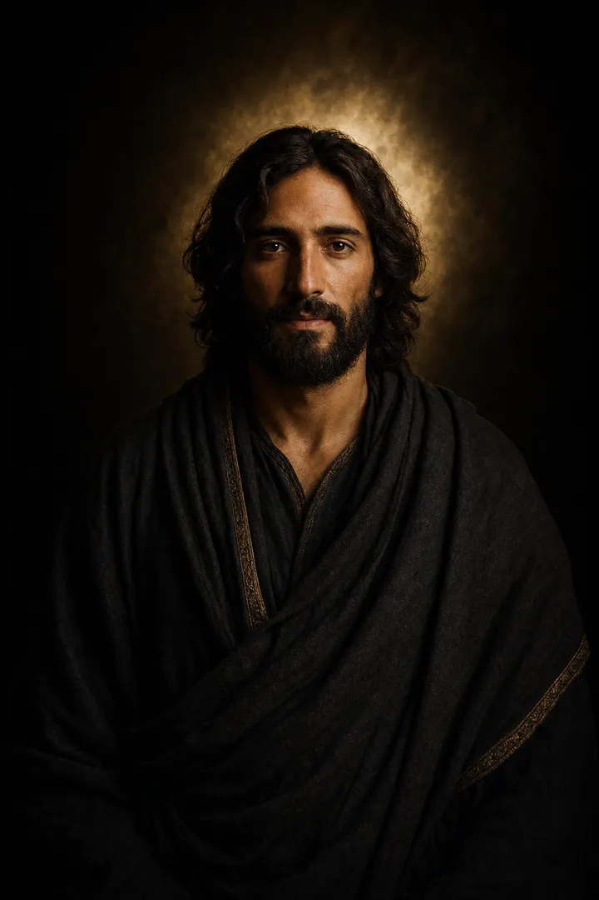
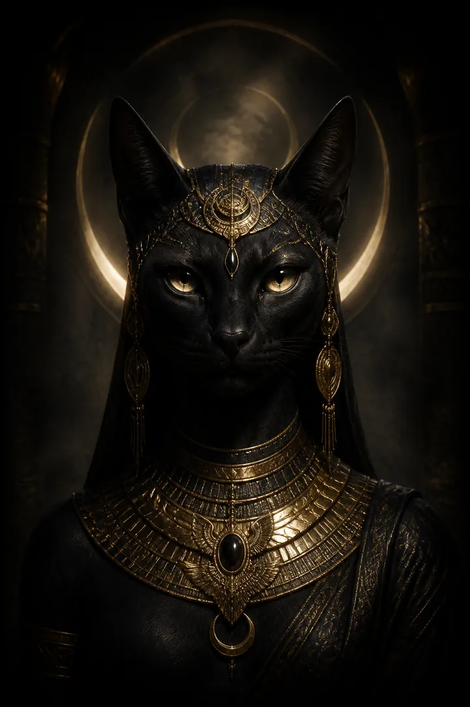

Созвездие теургий
Ритуальные обращения под конкретный запрос: защита, любовь, изобилие, сила, завершение циклов или новый путь. Практика подбирается индивидуально после разговора.
Одиннадцать теургий
Теургия · 15 канал
Ресурс · статус · реализация
15 аркан пронизывает мир и создаёт связи между людьми, деньгами, целями. Работа включает очищение чакр огнём. Наполнение денежного канала и луча захвата. Защита, освобождение от негативных связей.
Открыть теургиюЛилит

Независимость · границы · внутренняя сила
Лилит — первозданная женская архетипическая сила: тотальное принятие своей тени, проявление дикой, нецензурированной природы и выстраивание железобетонных личных границ.
Работа с каналом Лилит снимает зажимы, убирает синдром «хорошей девочки» и возвращает право заявлять о себе без чувства вины. Это возвращение к своим истокам, пробуждение магнетизма и обретение внутренней автономии.
Открыть теургиюМара

Завершение · перемены · освобождение
Мара — древняя сила глубокого очищения, обнуления и завершения изживших себя циклов. Работа с её каналом — это не про разрушение, а про смелость отпустить то, что тянет на дно: старые обиды, деструктивные привязки, чужие программы и ментальный мусор.
Теургия Мары жёстко, но ювелирно отсекает всё мёртвое, освобождая пространство для новой жизни. Это внутренний кризис, который неизбежно ведёт к перерождению и обретению истинной личной силы.
Открыть теургиюАфродита

Любовь · притягательность · гармония
Афродита — канал чистой созидательной энергии, истинной привлекательности и безусловной любви к своему проявлению. Практика убирает внутренние запреты на удовольствие от жизни и исцеляет травмы непринятия своего тела.
Аура наполняется мягким, но непреодолимым магнетизмом. Это состояние внутренней наполненности, когда мир начинает считывать вашу подлинную ценность.
Открыть теургиюАнубис

Переходы · защита · скрытое
Анубис — сила абсолютного порядка, взвешенности и прохождения сквозь любые жизненные переходы. Канал помогает обрести ментальную тишину, выстроить чёткий вектор движения в моменты неопределённости и защищает от внешнего хаоса.
Теургия Анубиса стабилизирует, выравнивает кармические перекосы и даёт жёсткую внутреннюю опору — чтобы принимать решения хладнокровно и точно.
Открыть теургиюРа

Солнечная сила · лидерство · движение
Солнечная энергия, жизненная сила и ясность. Укрепление воли, лидерских качеств и способности двигаться к цели.
Открыть теургиюГанеша

Новые начала · удача · мудрость
Устранение препятствий, удача в делах и новых начинаниях, мудрость в принятии решений.
Открыть теургиюЗолотой Телец

Изобилие · деньги · материальная опора
Изобилие, деньги и материальный достаток. Работа с денежным потоком, устойчивостью и благосостоянием.
Открыть теургиюИисус

Прощение · милосердие · внутренний свет
Прощение, исцеление души, милосердие и внутренний свет. Обретение покоя и духовной опоры.
Открыть теургиюБастет

Дом · радость · женственность
Защита дома, женственность, радость и чувственность. Гармония, лёгкость и хорошее самочувствие.
Открыть теургиюВелес
Изобилие · земная сила · реализация
Велес — древний хранитель материальных благ, земной мудрости и природной силы. Работа с его каналом открывает доступ к ресурсам, убирает подсознательные страхи перед большими деньгами и выстраивает мышление достатка.
Это плотная, укореняющая энергия. Она помогает перевести замысел в реальный результат: дело, оборот, стабильный доход.
Открыть теургию